大家好，我是bytezhou，本篇介绍Claude Code的Hooks，一种"事件触发"机制。
流行的开发框架都有"生命周期回调"，Claude Code的Hooks机制，也是一种基于生命周期的回调机制。简单来说，我们在CC会话的生命周期的一些节点处，预先埋下"钩子"，等CC的会话执行到那个节点时，就会自动触发"钩子"的操作，这就是Hooks。
1.“人驱动"与"事件驱动”
我们把Hooks和前面介绍的Slash Commands简单对比一下：
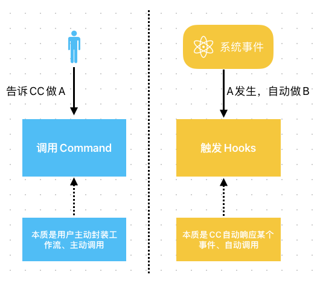
- Slash Commands：“人驱动”，用户主动发指令。
- Hooks：“事件驱动”，就像CC会话中埋下的"传感器"，一旦生命周期事件发生了，“传感器"上的动作就会被触发。
2.Claude Code生命周期中的Hook事件
Claude Code生命周期的主要节点示例如下（每个节点均可配置相应的Hook事件回调）：
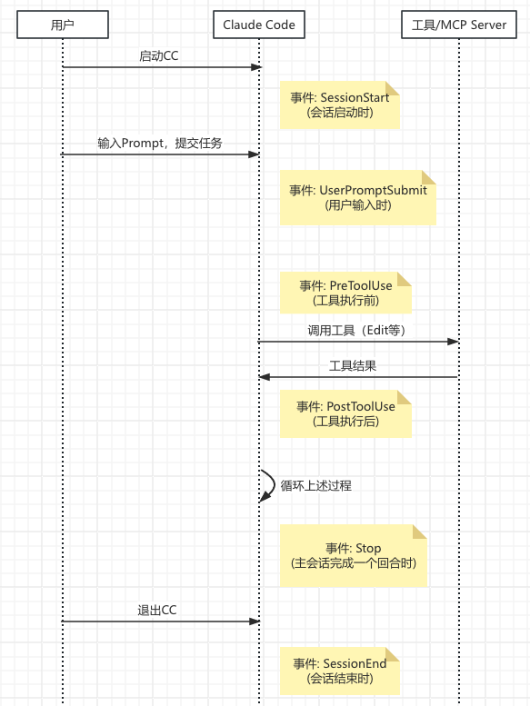
启动CC → SessionStart → 用户输入Prompt → UserPromptSubmit → CC调用工具 → PreToolUse → 工具执行，返回结果 → PostToolUse → 主回合结束 → Stop → 退出CC → SessionEnd
常用的Hook事件如下：
| 事件 | 触发时机 | 使用场景 |
|---|---|---|
| SessionStart | 会话启动时 | 执行一些初始化动作，加载特定"记忆"等 |
| UserPromptSubmit | 用户输入Prompt、CC还没执行时 | 可以对用户输入做一些安全校验、过滤等 |
| PreToolUse | CC调用工具前，准备执行但还未执行 | 可以获取传给工具的参数，做一些个性化操作，甚至拦截某次工具调用 |
| PostToolUse | 工具执行后 | 可以获取工具执行结果，做一些扫尾动作 |
| Stop | 主会话中的一轮对话结束时 | 进行"总结式"动作，记日志、存储结论性的结果等 |
| SessionEnd | 会话结束时 | 一些清理工作，或者保存当前状态等 |
2.1 Hooks的配置格式
跟前面介绍的Slash Commands、Skills类似，Hooks的配置也分为项目级、用户级：
- 项目级Hooks配置：位于
项目根目录/.claude/settings.json文件中 - 用户级Hooks配置：位于
~/.claude/settings.json文件中
具体的格式如下：
{
"hooks": {
"{Event}": [ // Hook事件名字，如 PreToolUse
{
"matcher": "{工具匹配模式}", // 要匹配哪些工具、或MCP方法，如 Edit
"hooks": [
{
"type": "command|prompt",
"command": "python3 count.py", // type=command，事件触发时，要执行的具体Shell命令
"prompt": "发给LLM的提示词", // type=prompt，事件触发时，要发给LLM的prompt
"timeout": 30 // 超时时间（秒）
}
]
}
]
}
}
-
{Event}：事件名字，如 PreToolUse、PostToolUse等。
-
matcher：指定匹配模式，一般
PreToolUse、PostToolUse这2个事件会指定特有的工具匹配，进行精细化的工具调用管控。""或"*"：匹配所有工具。Read：只能匹配"Read"工具。Write|Edit：匹配这2个工具中的一个即可。Bash(git:push:*)：只能匹配git push及其子命令。mcp__github__.*：匹配所有github mcp server的工具。
-
type：一般用
command，事件触发时，执行命令。 -
command：要执行的具体Shell命令，Hook回调的核心。
这里举个例子（来自everything-claude-code）：
{
"hooks": {
"PreToolUse": [
{
"matcher": "Write",
"hooks": [
{
"type": "command",
"command": "node -e \"let d='';process.stdin.on('data',c=>d+=c);process.stdin.on('end',()=>{const i=JSON.parse(d);const c=i.tool_input?.content||'';const lines=c.split('\\n').length;if(lines>800){console.error('[Hook] BLOCKED: File exceeds 800 lines ('+lines+' lines)');console.error('[Hook] Split into smaller, focused modules');process.exit(2)}console.log(d)})\""
}
],
"description": "Block creation of files larger than 800 lines"
}
]
}
}
这个Hook的作用是，在调用Write工具创建文件前，获取文件内容、并判断文件行数是否大于800，若该文件超过了800行，就拦截掉，不让调用Write工具创建文件。
2.2 向Hook命令传参
Claude Code通过stdin向Hook命令传参，以json形式，传递当前事件的上下文信息，包括事件名、当前工作目录等，通用字段如下：
{
"session_id": "abc123",
"transcript_path": "/path/to/transcript.txt",
"cwd": "/current/working/dir",
"permission_mode": "ask|allow",
"hook_event_name": "PreToolUse"
}
不同的事件，有额外的附加字段，我们主要关注 PreToolUse、PostToolUse 事件（最常用）：
{
"session_id": "abc123",
"transcript_path": "/path/to/transcript.txt",
"cwd": "/current/working/dir",
"permission_mode": "ask|allow",
"hook_event_name": "PreToolUse",
"tool_name": "Write", // 工具名字，如 Edit、Bash等
"tool_input": { // 工具的入参
"command": "命令字符串", // Bash工具：执行的命令
"content": "文件内容", // Write工具：文件内容
"file_path": "文件路径", // Edit/Write/Read工具：操作的目标文件路径
"old_string": "旧内容", // Edit工具：被替换的旧内容
"new_string": "新内容" // Edit工具：用来编辑的新内容
},
"tool_response": { // PostToolUse事件 独有字段
"type": "create",
"filePath": "文件路径", // Edit等编辑工具
"content": "文件内容",
"stdout": "命令执行结果的输出", // Bash工具
"stderr": "命令执行错误的输出" // Bash工具
}
}
我们可以添加一个项目级的PostToolUse的Hook事件，把CC传过来的原始参数打印到文件里看一下，Hook配置如下：
{
"hooks": {
"PostToolUse": [
{
"matcher": "Write|Edit",
"hooks": [
{
"type": "command",
"command": "echo $(cat) >> log.txt"
}
]
}
]
}
}
调用Write工具触发PostToolUse后，该Hook打印出来的原始入参如下：
{
"session_id": "07514e36-2bd1-43a7-9bed-d2d10e703d18",
"transcript_path": "/Users/zhouxinyu/.claude/projects/-Users-zhouxinyu-ai-project-AI---------/07514e36-2bd1-43a7-9bed-d2d10e703d18.jsonl",
"cwd": "/Users/zhouxinyu/ai-project/AI",
"permission_mode": "default",
"hook_event_name": "PostToolUse",
"tool_name": "Write",
"tool_input": {
"file_path": "/Users/zhouxinyu/ai-project/AI/test2.txt",
"content": "this is another test line"
},
"tool_response": {
"type": "create",
"filePath": "/Users/zhouxinyu/ai-project/AI/test2.txt",
"content": "this is another test line",
"structuredPatch": [],
"originalFile": null
},
"tool_use_id": "call_function_3isgijspbxp0_1"
}
2.3 Hook命令的输出结果
Hook命令通过exit code（退出码）控制Hook回调后的行为：
| 退出码 | 说明 |
|---|---|
| 0 | 允许CC继续操作，通过stdout把输出结果传递给CC |
| 2 | 阻止CC继续操作，通过stderr把错误信息反馈给CC |
| 1 | 不阻止CC，但把错误信息显示给用户 |
简单点讲，0-放行，2-拦截。
举个例子，这有一个拦截危险命令的PreToolUse事件的Hook脚本：
#!/bin/bash
input=$(cat)
command=$(echo "$input" | jq -r '.tool_input.command')
# 检查危险命令
if [[ "$command" == *"rm -rf"* ]]; then
echo "Error: Dangerous command blocked"
exit 2 # 阻止执行，拦截工具调用
fi
exit 0 # 允许执行，CC继续进行工具调用
exit 0 // 允许执行，继续进行工具调用
exit 2 // 阻止执行，拦截工具调用，通过
stderr传递错误信息
3.Hook配置示例
3.1 自定义一个操作日志记录的Hook
接下来进行完整的Hook配置演示，自定义一个项目级的PostToolUse的Hook，用python脚本实现简单的操作日志记录。
在当前项目的目录下面，创建python脚本，路径为$CLAUDE_PROJECT_DIR/.claude/hooks/log.py，其中，$CLAUDE_PROJECT_DIR环境变量，在Hook命令执行时，Claude Code会自动注入，python脚本内容如下：
#!/usr/bin/env python3
"""
PostToolUse Hook - 日志记录器
exit 0: 记录成功
exit 1: 记录失败（不阻止 Claude）
exit 2: 记录失败（阻止工具调用）
"""
import json
import sys
from datetime import datetime
from pathlib import Path
LOG_FILE = Path("~/.claude/hook_logs/tool_use.log").expanduser()
def log_event(tool_name: str, tool_input: dict, success: bool, error: str = None):
"""写入日志"""
timestamp = datetime.now().isoformat()
log_entry = {
"timestamp": timestamp,
"tool": tool_name,
"input": tool_input,
"success": success,
}
if error:
log_entry["error"] = error
LOG_FILE.parent.mkdir(parents=True, exist_ok=True)
with open(LOG_FILE, "a") as f:
f.write(json.dumps(log_entry, ensure_ascii=False) + "\n")
def main():
try:
input_data = json.load(sys.stdin)
except json.JSONDecodeError:
print("Error: Invalid JSON input", file=sys.stderr)
sys.exit(1)
tool_name = input_data.get("tool_name", "")
tool_input = input_data.get("tool_input", {})
# 过滤敏感字段
safe_input = {}
sensitive_keys = {"password", "token", "secret", "key", "credential"}
for k, v in tool_input.items():
if k.lower() in sensitive_keys:
safe_input[k] = "[REDACTED]"
else:
safe_input[k] = v
log_event(tool_name, safe_input, success=True)
print(f"Logged: {tool_name}", file=sys.stderr)
sys.exit(0)
if __name__ == "__main__":
main()
给log.py脚本加上"可执行"权限：
chmod +x ./.claude/hooks/log.py
下面，启动CC，进入CC的会话界面，利用交互式命令/hooks来创建该Hook，选择PostToolUse：
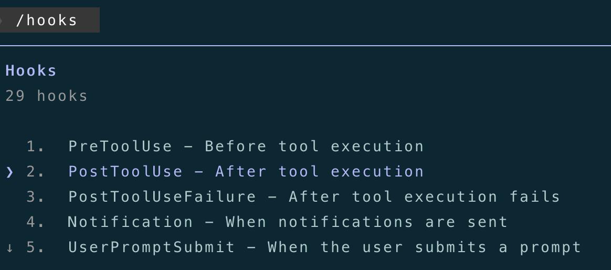
选择 “Add new matcher”：
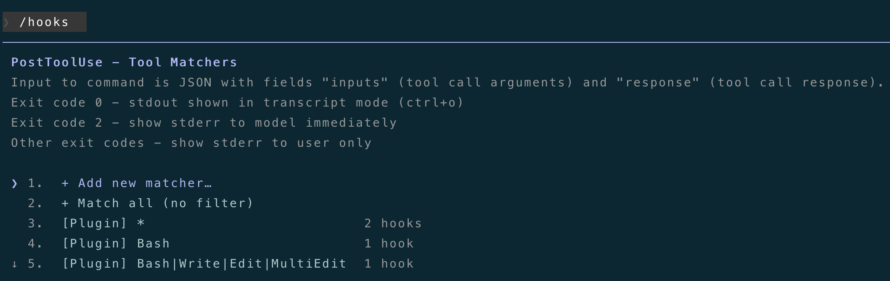
要匹配的工具，主要记录"写操作"相关的工具，Write|Edit|Delete|Bash：
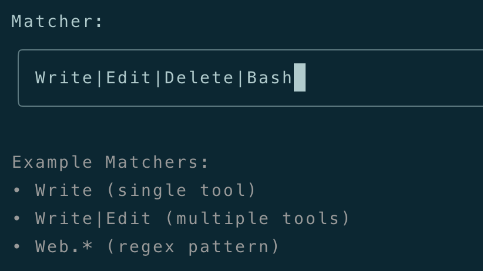
再选择"Add new hook”：
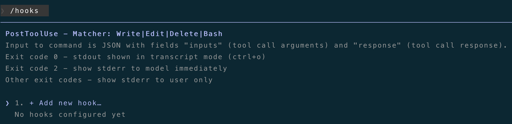
这里配置Hook要执行的命令：
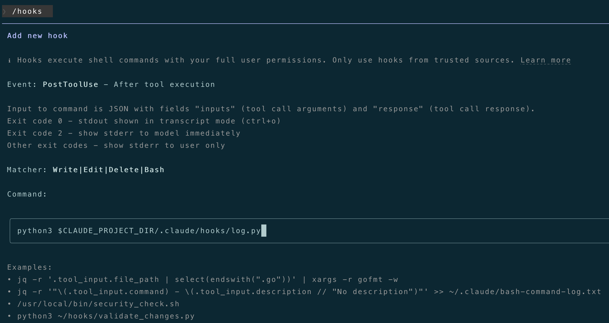
最后，选择项目级配置即可：
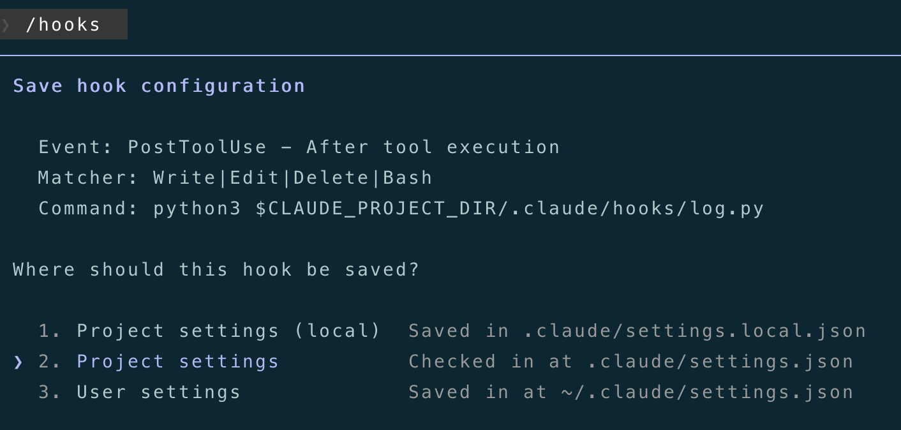
我们看一下配好后的./.claude/settings.json中的内容：
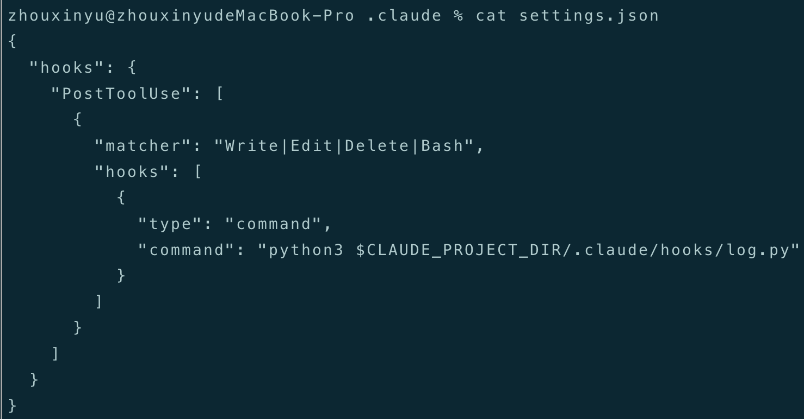
下面，我们来测试一下，在CC中调用"Write|Edit|Delete|Bash"工具做一些操作：
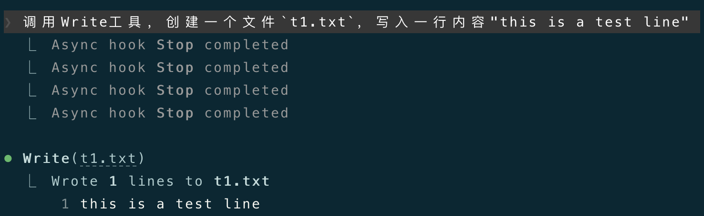
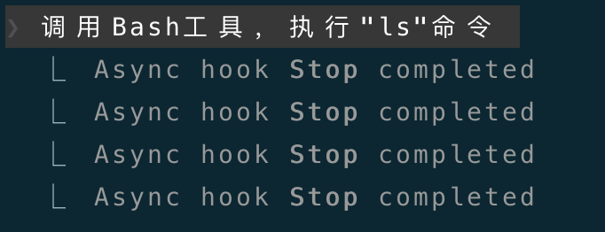
操作完成后，我们看一下脚本记录的日志文件~/.claude/hook_logs/tool_use.log：
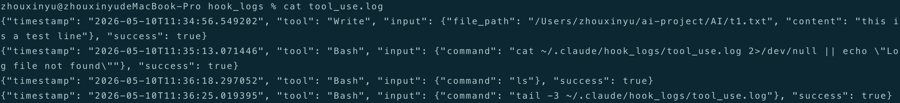
可以看到，相关的操作都通过该Hook脚本成功的写到日志文件了。
3.2 debug Hook
我们可以打开Claude Code的debug模式，看一看更详细的Hook执行日志。下面是以debug模式启动CC的命令：
claude --debug
打开debug后，可以看到debug文件路径：
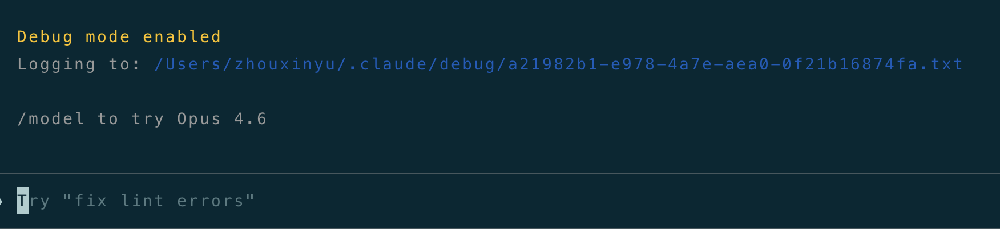
然后，另外开一个终端，tail -f debug文件的实时输出：
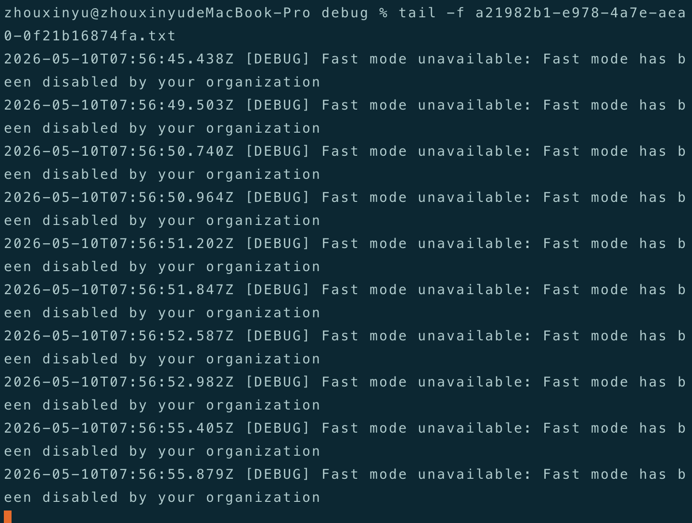
再次触发一下Hook，看看debug文件的输出：
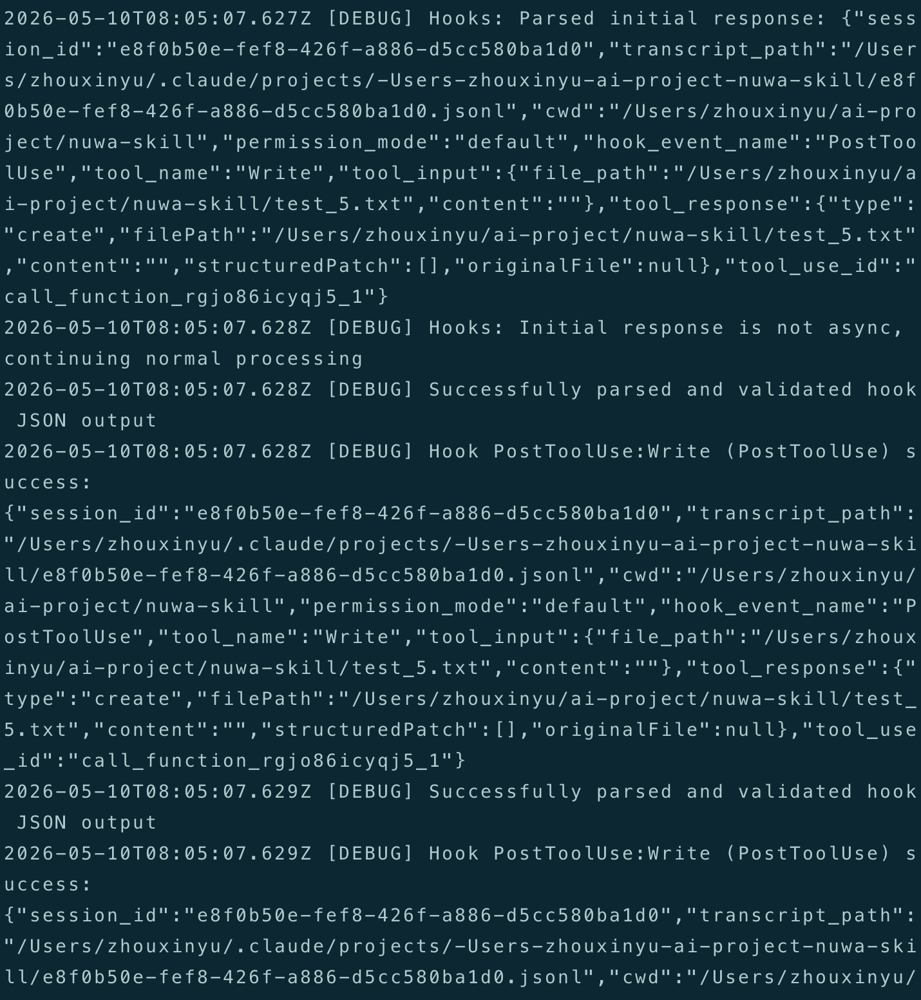
可以清晰看到，Hook被触发执行、响应结果等，通过这种方式，来调试Hook。
4.结语
本篇详细介绍了Claude Code生命周期中的主要Hook事件、如何配置Hook、Hook的输入输出，最后，演示了如何自定义一个Hook以及如何debug Hook。
下一篇会介绍Claude Code的权限体系。
写到这儿，已经是Claude Code系列的第9篇文章了，大概还有2~3篇就结束了。自认为对Claude Code的拆解和介绍，还是比较系统全面的，会坚持写完的。
感谢你点开这篇文章，欢迎关注我的公众号：10年码农，纯技术分享，一起在AI时代探索未来！

客官您满意的话，感谢打赏。